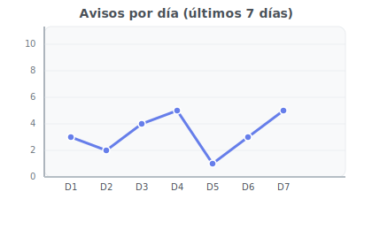
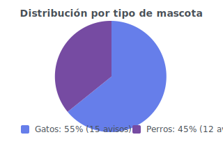
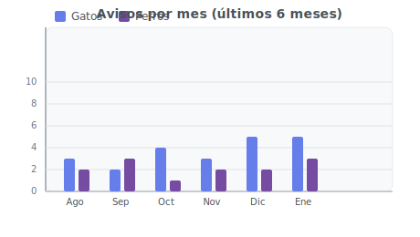

Estadísticas de Adopción
Portada
Agregar aviso
Ver listado
Estadísticas del Sistema de Adopción
Avisos por día

Avisos por tipo (perro/gato)

Avisos por mes, diferenciando perros y gatos

Volver a la portada